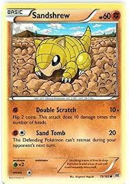

This POKéMON curls up to protect itself from its enemies.
SANDSHREW's body is configured to absorb water without waste, enabling it to survive in an arid desert.
SANDSHREW has a very dry hide that is extremely tough. The POKéMON can roll into a ball that repels any attack.
At night, it burrows into the desert sand to sleep.
